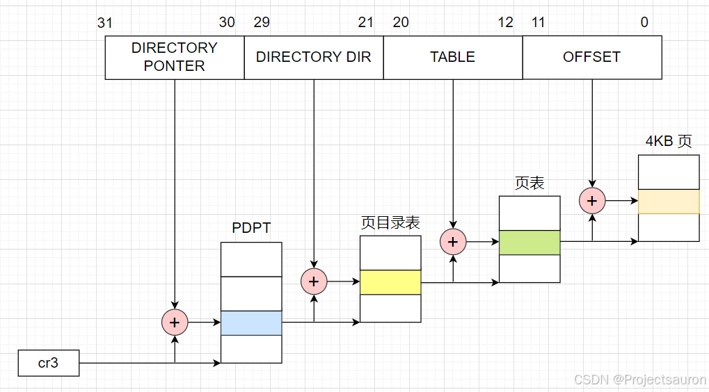

Linux 内存管理（四）之物理地址扩展（PAE）
[TOC]
前言
在 32 位操作系统中，使用 32 位的寻址空间，最多只能表示 $2^{32}$ 个不同的地址，即 4GB 的地址空间。这意味着无论实际物理内存有多大，操作系统最多只能寻址 4GB 的物理内存。
然而，在实际应用中，特别是在服务器和高性能计算领域，需要处理大型数据集和运行大规模应用程序的情况下，4GB 的内存往往不够用。因此，引入 PAE 机制可以扩展物理地址空间，使操作系统能够支持更大的物理内存。
有关 Linux 分页机制的部分可以参考 Linux 内存管理（三）之分页机制。
一、什么是 PAE
PAE（Physical Address Extension，物理地址扩展）是一种扩展物理地址寻址空间的技术，它允许 32 位的 x86 计算机处理超过 4GB 物理内存的容量。在 PAE 技术的支持下，可以使用 32 位的内核和 64 位的 CPU，全面兼容各种物理地址大于 4GB 的计算设备。因此，它被广泛应用于高性能计算、服务器集群、虚拟化等领域。
通过设置 cr4 控制寄存器中第五位 PAE 标志激活 PAE。页目录项中的页大小标志 PS 启用大尺寸页（在 PAE 启用时为 2M）。
二、PAE 的作用
PAE 机制通过使用 36 位的物理寻址空间，可以支持更大的物理内存，最多可达到 64GB。PAE 通过在 32 位寄存器中使用额外的 4 位来扩展地址，也就是把 32 位线性地址装换为 36 位物理地址，这样就可以访问更多的物理内存。
这也意味着每个进程仍然可以访问 4GB 的虚拟内存空间，但系统现在能够管理更大的物理内存空间。在原来的情况下，多个进程需要共享有限的 3GB 物理内存，这会导致内存压力增大。通过扩展物理内存空间，PAE 降低了多进程间竞争物理内存的概率，从而改善了系统的性能和稳定性。
1、PAE 下的页表结构
64GB 的 RAM 被分为 $2^{24}$ 个页框，页表项的物理地址字段从 20 位扩展到了 24 位。因为 PAE 页表项必须包含 12 个标志位和 24 个物理地址位，总数之和为 36，页表项大小从 32 位变为 64 位增加了一倍。结果，一个 4KB 的页表包含 512 个表项而不是 1024 个表项。
在开启 PAE 的情况下使用的是三级页表，第一级是新引入的 PDPT（Page Directory Pointer Table，页目录指针表，相当于PGD了），它由 4 个 64 位表项组成，第二级是 PMD，第三级是 PTE。PDPT 只有 4 个 表项，每个对应 1GB RAM，每个表项是 64 位。
在 4KB 的 page 设置的情况下，每个 page 只能存 512 个 entry（无论是目录表项，还是页表项），表示 0-511 这个范围，需要占线性地址中的 9 位；同理，由于页目录项与页表项具有同样的结构，高一级的页目录表中也仅能包含 512 个页表项（目录项），同样占用了 32 位线性地址中的 9 位。
此时，线性地址剩余位数为：32 位（总位数）- 12 位（页内偏移量）- 9 位（指示页表中的索引）- 9 位（指示页目录表中的索引）= 2 位。而这剩余的 2 位就是用来指向 PDPT 中 4 个表项中的一个。
cr3 控制寄存器包含一个 27 位的页目录指针表基地址字段。因为 PDPT 存放在 RAM 的前 4GB 中，并在 32 字节的倍数上对齐，因此 27 位足以表示这种表的基地址。
如下是启用 PAE 下 4K 分页（页目录项中的 PS 标志清 0）的页表结构：

线性地址分配如下：
- cr3：指向一个 PDPT
- 位 31-30：指向 PDPT 中 4 个项中的一个
- 位 29-21：指向页目录中 512 个项中的一个
- 位 20-12：指向页表中 512 项中的一个
- 位 11-0：4KB 页中的偏移量
如下是启用 PAE 下 2MB 分页（页目录项中的 PS 标志清 0）的页表结构：
线性地址分配如下：
- cr3：指向一个 PDPT
- 位 31-30：指向 PDPT 中 4 个项中的一个
- 位 29-21：指向页目录中 512 个项中的一个
- 位 20-0：2MB 页中的偏移量
总结
总结一下，Linux 的 PAE 机制为系统提供了更大的物理内存支持，使其能够突破 32 位寻址的限制。通过将内核的物理地址空间扩展到 36 位，PAE 允许系统最多支持 64GB 的物理内存。这一机制的引入，使得 Linux 能够在处理大规模的数据和运行内存密集型任务时更加高效和稳定。